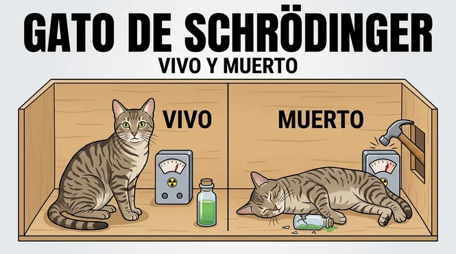

Imagina por un instante que dentro de una caja sellada conviven simultáneamente la versión de ti que vive aplastada por la fatiga mental y otra versión que ya alcanzó el estado de abundancia, calma y claridad absoluta. En la física teórica, el experimento del gato de Schrödinger nos enseñó que una partícula puede permanecer en un estado de superposición cuántica existiendo en múltiples probabilidades a la vez hasta que un observador abre la caja y fuerza al sistema a colapsar en una sola realidad tangible. Pero ¿qué ocurre si la "caja" es tu propia arquitectura neuronal y el "observador" es la frecuencia con la que estimulas tu subconsciente cada día?
La mayoría de las personas pasan años atrapadas en estados de resistencia interna, buscando infructuosamente en la ley de atraccion o intentando forzar cambios mediante afirmaciones lógicas que rebotan en la barrera consciente. No comprenden que el cerebro opera bajo principios de resonancia física: si tu patrón vibratorio está fragmentado por el estrés o la distorsión acústica del entorno, el "colapso de onda" siempre jugará en contra de tus deseos más profundos.
1. ¿Qué es el Experimento del Gato de Schrödinger y por qué Desafía la Realidad?
Diseñado en 1935 por el físico austriaco Erwin Schrödinger, este experimento mental buscaba ilustrar una paradoja de la mecánica cuántica: el principio de superposición. En este escenario, un gato hipotético encerrado en una caja con un mecanismo atómico tiene un 50% de probabilidades de estar vivo y un 50% de estar muerto al mismo tiempo, mientras permanezca sin ser observado.
En el ámbito de la ciencia neuronal moderna, la mente subconsciente funciona como esa misma caja sellada. En ella habitan infinitos potenciales de desarrollo personal, paz mental y abundancia. Sin embargo, cuando la rumiación nocturna o la fatiga provocan constantes picos de cortisol en el organismo, tu atención fija el colapso de la realidad sobre el escenario de mayor agotamiento y escasez.
- Superposición de estados: Múltiples posibilidades de bienestar existen en tu campo neurobiológico en este preciso instante.
- El Rol del Observador: Tu enfoque subconsciente y la tasa de inducción neuroacústica determinan qué potencial se materializa.
- Decoherencia Cuántica: La interferencia del "ruido mental" disipa la coherencia entre tus hemisferios cerebrales.
- Sincronización de Fase: La aplicación de estímulos sonoros puros guía al cerebro hacia estados armónicos estables.
2. Del Colapso de la Función de Onda a la Reprogramación Subconsciente
Para lograr que la mente pase de la dispersión al enfoque profundo, se requiere un catalizador físico. No basta con desear el cambio de forma superficial; se necesita alterar la actividad eléctrica del cerebro mediante la electroencefalografía y el entrenamiento armónico de ondas.
Cuando te encuentras en un estado de estrés crónico, tu actividad cerebral emite picos desordenados en rango Beta Alto. En este nivel de agitación es imposible reescribir viejas creencias limitantes o encontrar descanso. Para colapsar la "versión próspera y saludable" de tu realidad, debes facilitar el acceso directo a las frecuencias Alfa (8-12 Hz) y Theta (4-8 Hz), donde la receptividad subconsciente alcanza su punto máximo.
⚠️ AVISO TÉCNICO: La trampa de la compresión MP3 en internet
Muchos intentan utilizar frecuencias en plataformas de streaming o videos de YouTube sin saber que los algoritmos de compresión con pérdida (MP3 u Ogg Vorbis) eliminan las microfrecuencias superiores e introducen artefactos de fase. Esto destruye la geometría del sonido, imposibilitando que tus hemisferios logren la sincronización neuroacústica deseada. Si deseas profundizar en este fenómeno, te invito a leer por qué los audios de youtube para insomnio no funcionan .
¿Listo para Colapsar tu Realidad Deseada?
Accede hoy mismo al espectro máster sin compresión en 24 bits de QuantumAudio® y permite que la sincronización acústica de precisión abra la caja de tus verdaderos potenciales subconscientes.
OBTENER QUANTUMAUDIO® HOY3. La Geometría Sonora: Por qué la Fidelidad Máster WAV de 24 Bits es Indispensable
El cerebro humano responde de forma matemática al estímulo auditivo externo mediante el fenómeno conocido como *Respuesta de Siguiendo la Frecuencia* (FFR, por sus siglas en inglés). Si el estímulo presenta fluctuaciones de fase causadas por compresión digital, la estimulación se vuelve ineficaz y genera fatiga auditiva en lugar de calma somática.
A diferencia de los formatos comprimidos estándar de la web, QuantumAudio® entrega la señal sonora en formato WAV de 24 bits / 96 kHz totalmente puro, garantizando la preservación matemática del espectro de onda completo.
| Característica Acústica | Plataformas Gratuitas (MP3) | QuantumAudio® (WAV 24-Bit) |
|---|---|---|
| Ancho de Banda de Frecuencia | Recortado abruptamente a 16 kHz | Espectro Análogo Completo (hasta 48 kHz) |
| Integridad de Fase | Alterada por compresión con pérdida | Coherencia de Fase 100% Precisa |
| Sincronización Hemisférica | Intermitente / Nula | Sustentada y Continuada |
| Esfuerzo Requerido | Requiere concentración o meditar | 100% Pasivo (Solo colocarte audífonos) |
4. Cómo Activar tu Máximo Potencial con Escucha Pasiva Neuroacústica
Entender la ciencia detrás de la física cuántica y las frecuencias sonoras es solo el primer paso. El verdadero cambio ocurre cuando implementas una rutina diaria de estimulación pasiva sin fricción mental. Si intentas forzar la mente mediante la fuerza de voluntad pura, la resistencia subconsciente suele duplicar su intensidad.
Con QuantumAudio®, no necesitas dedicar horas a técnicas complejas ni esforzarte por "dejar la mente en blanco". La física del arrastre acústico realiza la transición por ti de forma automática. Al recostarte y escuchar la señal pura de alta definición, la actividad bioeléctrica de tus hemisferios se ralentiza progresivamente, facilitando la desconexión del estrés y la apertura hacia estados de alta creatividad y manifestación.
- Aislamiento del Entorno: Utiliza auriculares supraaurales o in-ear para garantizar que cada canal reciba el estímulo independiente.
- Espacio de Desconexión: Dedica de 10 a 15 minutos en un lugar cómodo, libre de notificaciones telefónicas.
- Recepción Pasiva: Cierra los ojos y permite que la vibración HD regule tu sistema nervioso sin juzgar los pensamientos que emergen. Para potenciar tu práctica, puedes descubrir la mejor hora para escuchar la frecuencia 369 y alinear tus ventanas de descanso.
"Llevaba meses atrapado en bucles de sobrepensamiento nocturno, buscando respuestas en teorías cuánticas y libros de autoyuda sin lograr calmar mi cabeza. Cuando reemplacé los videos comprimidos de YouTube por el archivo audiofónico Máster WAV 24-bit de QuantumAudio®, la diferencia fue inmediata: a los 5 minutos siento una presión agradable que afloja la mandíbula y me sumerge en un estado de calma absoluta."
— Dr. Roberto M., Investigador Independiente
Toma el Control de tu Coherencia Cuántica
No permitas que la distorsión auditiva siga bloqueando tus avances. Haz que tu mente subconsciente colapse en la frecuencia de la serenidad y el éxito con la tecnología de QuantumAudio® .
DESBLOQUEAR MI POTENCIAL AHORA5. Pasos Prácticos para Aplicar la Sincronización Cuántica en tu Vida Diaria
Para maximizar los beneficios de la tecnología de estimulación pasiva y convertir el concepto teórico del experimento de Schrödinger en una experiencia transformadora diaria, te sugerimos incorporar las siguientes pautas:
- Crea una Rutina de Higiene Sonora: Integra la escucha antes de dormir o justo al despertar, momentos en que el cerebro transiciona de forma natural entre ondas Alfa y Theta.
- Sustituye el Ruido Digital: Elimina la exposición a pantallas o audio de baja calidad al menos 30 minutos antes de tu sesión de entrenamiento neuroacústico.
- Sostenibilidad en el Tiempo: La constante repetición del estímulo puro favorece la neuroplasticidad cerebral, consolidando nuevas vías de respuesta rápida ante el estrés o la falta de concentración.
Al igual que el célebre físico austriaco planteó que la observación determina el estado definitivo del sistema dentro de la caja, hoy tienes la oportunidad de elegir qué frecuencia observará y guiará tu propia biología. La caja está abierta; el resultado final depende únicamente del estímulo que decidas entregar a tu cerebro hoy mismo.